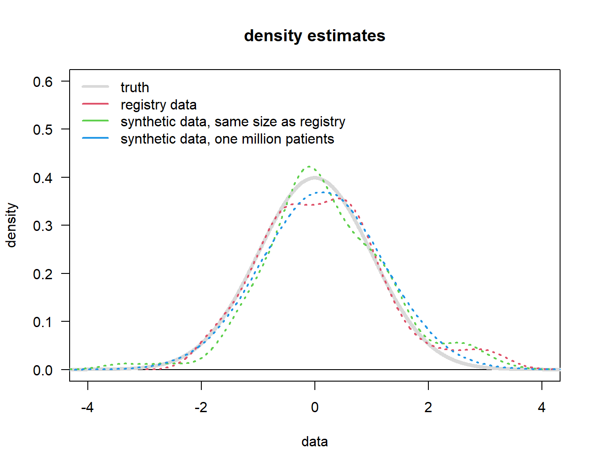

mu <- 0
sd <- 1Synthetic data: What are the properties?
1 Problem statement
There are instances where we run a study, e.g. a single-arm trial, and would like to contextualize it using external data. Ocassionally, the external data owner is not allowed or does not want to share the data. An option then is to “learn” the external data structure and data generating mechanism and simulate patients with these features. This is often referred to as “synthetic data”.
Synthetic data can be generated as control arm, and/or treatment arm.
2 Download this file
You can download this file here
3 Question
In theory, once one has a simulation engine, one can generate an arbitrary number of patients. The following questions then may be asked:
- How many synthetic patients should we simulate?
- Can we potentially “replace” and/or add real patients with simulated ones?
One can think of an arbitrary complicated data structure - to illustrate the basic feature we use here the simplest possible scenario. But the message remains the same also for more complicated scenarios.
4 Scenario
We assume that we have one measurement which is normally distributed with mean \(\mu = 0\) and standard deviation \(\sigma = 1\).
Now we “learn” the data structure from that registry. We are interested in the mean this time, but the quantity of interest can be anything, e.g. a hazard ratio.
# generate registry data
set.seed(23041977)
n <- 100
x <- rnorm(n = n, mean = mu, sd = sd)So we have measurements of this variable from \(n = 100\) patients. This can the be thought of as the external registry data we want to use to contextualize our internal single arm trial, e.g.
# compute summary statistics of those
# here we do that in a very simple way -
# but AI will not get more out of it!
mu_est <- mean(x)
sd_est <- sd(x)
# now simulate "synthetic" data based on the data structure that you have learned
# from the registry
n_syn <- 10 ^ 6
x_syn <- rnorm(n_syn, mean = mu_est, sd = sd_est)Now, we look at density estimates of these various quantities:
# generate an empty plot
par(las = 1)
plot(0, 0, type = "n", xlim = 4 * c(-1, 1), ylim = c(0, 0.6), xlab = "data", ylab = "density",
main = "density estimates")
abline(h = 0)
# plot the truth from which we generated the "registry data"
xs <- seq(-10, 10, 0.01)
lines(xs, dnorm(xs, mean = mu, sd = sd), col = grey(0.85), lwd = 4)
# add the estimated density of the actual "registry data"
lines(density(x), col = 2, lwd = 2, lty = 3)
# now first dataset of "synthetic data":
# use same number of patients as originally in the registry
lines(density(x_syn[1:n]), col = 3, lwd = 2, lty = 3)
# second dataset: now a million patients
lines(density(x_syn), col = 4, lwd = 2, lty = 3)
legend("topleft", c("truth", "registry data", "synthetic data, same size as registry",
"synthetic data, one million patients"),
lty = 1, col = c(grey(0.85), 2:4), lwd = c(3, 2, 2, 2), bty = "n")
So, what observations can we make from this Figure 1?
- The “registry data” (red line) of course comes with uncertainty, it is not “the truth”.
- Synthetic data, whether based on the same number of patients (\(n = 100\), green) as the original registry or one million patients will
- mimick the registry distribution (not the underlying truth),
- with increasing sample size just mimick the registry distribution with a more “normal” shape (because that is the assumption we put in).
The key message is that increasing the sample size beyond the number of the original dataset (our “registry data”, \(n = 100\)) does not lead to more precision beyond what is in the original dataset! It is not possible to “generate” patients out of nothing.
5 Recommendations
- The use case for “synthetic data” is to have data to contextualize internal data if the original data can not be used (for whatever reason).
- If real patient data is available do not use synthetic data.
- From a regulator’s perspective “synthetic data” are lower in credibility than historical or external controls, because typically what we call here “registry data” are already historical / or external controls. But we are not using that but are simulating from some approximation to them - so they have to be lower in hierarchy, because that approximation might miss one or more important aspects.
- Even a arbitrary large number of synthetic patients cannot provide more information/value than the underlying real data (applies also/especially to rare disease setting).